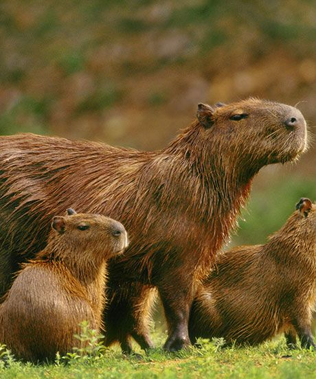

Capivara
Hydrochoerus hydrochaeris

São ótimos nadadores, o que auxilia em seu escape de predadores,
por conta disso vivem próximos à corpos de água, capazes até mesmo de tirar umm cochilo com o nariz para fora!
São animais extremamente sociais entre si e outras espécies, como pássaros e macacos.
Home